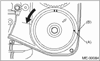
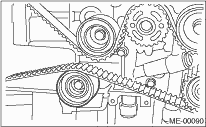
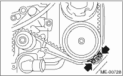

1. AUTOMATIC BELT TENSION ADJUSTER ASSEMBLY AND BELT IDLER
1. Preparation for installation of automatic belt tension adjuster assembly.
CAUTION:
• Always use a vertical type pressing tool to move the adjuster rod down.
• Do not use a lateral type vise.
• Push the adjuster rod vertically.
• Press-in the push adjuster rod gradually taking three minutes or more.
• Do not allow press pressure to exceed 9,807 N (1,000 kgf, 2,205 lb).
• Press the adjuster rod as far as the end surface of the cylinder. Do not press the adjuster rod into cylinder. Doing so may damage the cylinder.
• Do not release the press pressure until stopper pin is completely inserted.
(1) Attach the automatic belt tension adjuster assembly to vertical pressing tool.
(2) Slowly move the adjuster rod down with a pressure of 294 N (30 kgf, 66 lb) or more until the adjuster rod is aligned with the stopper pin hole in the cylinder.
(3) With a 2 mm (0.08 in) dia. stopper pin or a 2 mm (0.08 in) (nominal) dia. hex bar wrench inserted into the stopper pin hole in the cylinder, secure the adjuster rod.
2. Install the automatic belt tension adjuster assembly.
Tightening torque:
39 N·m (4.0 kgf-m, 28.9 ft-lb)
3. Install the belt idler No. 2.
Tightening torque:
39 N·m (4.0 kgf-m, 28.9 ft-lb)

4. Install the belt idlers.
Tightening torque:
39 N·m (4.0 kgf-m, 28.9 ft-lb)
1. Preparation for installation of automatic belt tension adjuster assembly. 
2. Align the mark (A) on crank sprocket with the mark on oil pump cover at cylinder block.
3. Align single line mark (A) on the exhaust cam sprocket (RH) with notch (B) on timing belt cover.
4. Align single line mark (A) on the intake cam sprocket (RH) with notch (B) on timing belt cover. (Make sure that the double lines (C) on intake and exhaust camshaft sprockets are aligned.)
5. Align the single line mark (A) on exhaust cam sprocket (LH) with notch (B) on timing belt cover by turning the sprocket counterclockwise (as viewed from front of engine).

6. Align the single line mark (A) on intake cam sprocket (LH) with notch (B) on timing belt cover by turning the sprocket clockwise (as viewed from front of engine). (Make sure that the double line marks (C) on intake and exhaust cam sprockets are aligned.)
7. Make sure that the cam and crank sprockets are positioned properly.
CAUTION:
• Intake and exhaust camshafts for this DOHC engine can be independently rotated with the timing belts removed. As can be seen from the figure, if the intake and exhaust valves are lifted simultaneously, the valve heads will interfere with each other, resulting in bent valves.
|
(A) |
Intake camshaft |
|
(B) |
Exhaust camshaft |
• When the timing belts are not installed, four camshafts are held at the “zero-lift” position, where all cams on camshafts do not push the intake and exhaust valves down. (Under this condition, all valves remain unlifted.)
• When the camshafts are rotated to install the timing belts, #2 intake and #4 exhaust cam of camshafts (LH) are held to push their corresponding valves down. (Under this condition, these valves are held lifted.) Camshafts (RH) are held so that their cams do not push valves down.
• Camshafts (LH) must be rotated from the zero-lift position to the position where the timing belt is to be installed with the smallest possible angle, in order to prevent mutual interference of intake and exhaust valve heads.
• Do not allow the camshafts to rotate in the direction shown in the upper figure. Doing this may cause both the intake and exhaust valves to lift simultaneously, resulting in mutual interference of valve heads.
|
(A) |
Direction of rotation |
|
(B) |
Timing belt installation position |
8. Installation of timing belt:
Align the alignment mark on the timing belt with marks on the sprockets in the alphabetical order shown in the figure. While aligning marks, position the timing belt properly.
CAUTION:
• If the timing belt slips by 3 or more teeth, the valve and piston may hit each other.
• Make sure that the direction of belt rotation is correct.
|
(1) |
Arrow mark |
(4) |
54.5 tooth length |
(7) |
Install it in the end |
|
(2) |
Timing belt |
(5) |
51 tooth length |
||
|
(3) |
28 tooth length |
(6) |
28 tooth length |
9. Install the belt idlers.
Tightening torque:
39 N·m (4.0 kgf-m, 28.9 ft-lb)
NOTE:
Make sure that the marks on the timing belt and sprockets are aligned.

10. After ensuring that the marks on the timing belt and sprockets are aligned, remove the stopper pin from tensioner adjuster.
11. Install the timing belt guide. (MT model)
NOTE:
• Clean thread holes of the timing belt cover before installing the bolts.
• Apply liquid gasket to the bolt screw. (Cam sprocket section only)
Liquid gasket:
THREE BOND 1324 (Part No. 004403042) or equivalent
(1) Temporarily tighten the bolts mounting the timing belt guide.
(2) Check and adjust the clearance between timing belt and timing belt guide.
Clearance:
1.0±0.5 mm (0.039±0.020 in)
(3) Tighten the bolts mounting the timing belt guide.
Tightening torque:
9.75 N·m (1.0 kgf-m, 7.2 ft-lb)
Tightening torque:
6.4 N·m (0.65 kgf-m, 4.7 ft-lb)

Tightening torque:
6.4 N·m (0.65 kgf-m, 4.7 ft-lb)

Tightening torque:
6.4 N·m (0.65 kgf-m, 4.7 ft-lb)

12. Install the timing belt cover.
13. Install the crank pulley.
14. Install the V-belts.